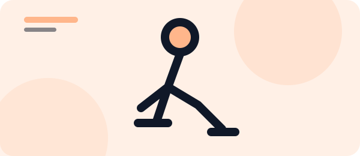
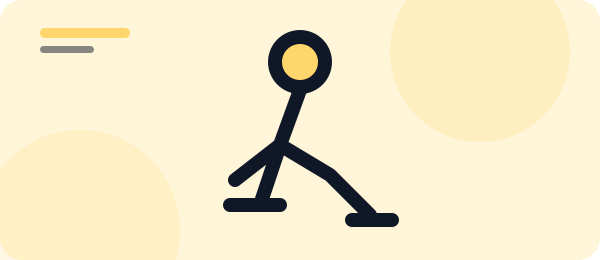

PIERNAS
Sentadillas
Fortalece piernas y glúteos manteniendo la espalda recta.
BIBLIOTECA FIT_HOME
Seis ejercicios sencillos para crear una rutina en casa. Empieza por tu nivel y cuida la técnica.
Sin máquinas ni equipamiento especial.
PIERNAS
Fortalece piernas y glúteos manteniendo la espalda recta.

BRAZOS
Trabaja pecho, hombros y brazos con un movimiento controlado.

ABDOMEN
Activa el abdomen y mantén el cuerpo alineado.

PIERNAS
Mejora el equilibrio y fortalece cada pierna por separado.

ABDOMEN
Realiza repeticiones suaves sin tirar del cuello.
CARDIO
Eleva las pulsaciones con un ejercicio dinámico de cuerpo completo.
TU RUTINA
Cuéntanos qué te apetece entrenar. Este formulario es una demostración visual y no envía datos.